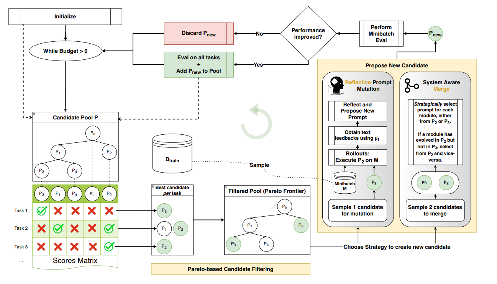
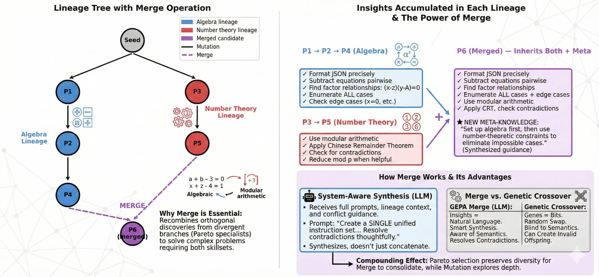

This article was made possible by the research papers referenced throughout, the Weaviate discussion with Lakshya A Agrawal, and guidance from Kerem Turgutlu at answer.ai. Created using the solveit platform by fast.ai.
You’ve spent hours tuning your agentic pipeline. The system prompt is 500 words of carefully crafted instructions. It works… 70% of the time. You have 50 labeled examples. Now what?
Fine-tuning requires thousands of samples. Reinforcement learning needs expensive rollout collection. Manual prompt iteration doesn’t scale. You’re stuck.
But what if you could match RL’s optimization performance using 50 examples instead of 5,000?
GEPA (Genetic-Pareto) achieves exactly this—by exploiting something traditional optimization ignores: the rich textual traces that LLM systems already produce. Instead of reducing a complex trajectory to a single scalar reward, GEPA lets the LLM reflect on its own failures and propose improvements directly.
In this post, we’ll unpack how it works, why modern LLMs’ improving self-reflection capabilities make this approach newly viable, and what it means for practitioners building compound AI systems.
The Problem: Scalar Rewards and Expensive Rollouts
Traditional AI optimization techniques—reinforcement learning and fine-tuning—have achieved remarkable results in domains with abundant data or cheap rollouts (complete execution traces from input to output). But what happens when evaluation is expensive?
Consider:
- Agentic pipelines that invoke simulations, query rate-limited APIs, or run multi-step tool chains
- Code generation for novel hardware, where each evaluation requires compiling for custom silicon and executing on the device
- Complex reasoning tasks with expensive verification steps
Collecting thousands of rollouts simply isn’t feasible in these settings.
The core issue: RL learns by comparison. A 500-step trajectory collapses to reward = 0.73. Did step 12 fail? Was the reasoning sound but the final answer malformed? The scalar tells you nothing. To extract signal, RL must compare many trajectories—this one scored 0.8, that one scored 0.4, what differed?—requiring sample counts that expensive domains can’t support.
RL and fine-tuning require generating large amounts of rollouts to gather scalar learning signals—sample inefficient by design.
When each rollout costs minutes (or dollars), this approach breaks down.
The Insight: LLM Pipelines Generate Rich Textual Traces
Modern AI systems built around LLMs are fundamentally different from traditional ML pipelines. At every step of execution, they produce natural language artifacts that traditional optimization simply discards:
- Reasoning traces — Chain-of-Thought and ReAct logs expose the model’s explicit thought process. When a multi-hop QA system fails, you can see where the reasoning went wrong: “The capital of France is Paris. Paris is in Germany…” The failure mode is visible in the text.
- Environment feedback — Compiler errors don’t just say “failed.” They say
cannot find symbol 'x', did you mean 'y'?API responses return structured explanations. Profilers report exactly which function consumed 80% of runtime. - Evaluation rubrics — LLM-as-judge systems don’t just score 3/5. They explain: “Response was accurate but exceeded the 200-word limit. Missing the requested bullet-point format. Tone too formal for the specified Slack context.”
Each of these is dramatically richer than reward = 0.73.
The key realization: these traces aren’t just logs for debugging—they’re potential input to the optimizer. A compiler error that says “did you mean ‘y’?” contains the fix. A rubric that says “too verbose” specifies exactly what to change.
Traditional RL ignores all of this. It reduces the entire trajectory to a scalar, then tries to reconstruct what went wrong by comparing thousands of trajectories.
But what if we could just… read the feedback?
This is the opportunity GEPA exploits. The question becomes: can an LLM reflect on these traces and propose improvements directly?
The Opportunity: LLMs Can Reflect on Their Own Failures
Here’s the key insight enabling a new optimization paradigm: LLMs already have prior knowledge about the domains they’re working in, and they’re increasingly capable of self-reflection.
Consider what happens with different types of feedback:
Compiler errors — When the compiler returns cannot find symbol 'x', did you mean 'y'?, the LLM doesn’t need thousands of examples to learn the fix. It already knows the library’s API. One error message is enough.
“The language model already knows that x is not a valid API name in the library but y is. Next time I should try this.” — Lakshya A Agrawal
LLM-as-judge feedback — When a judge says “your summary was accurate but exceeded the 200-word limit and used overly formal tone for Slack,” the model can directly incorporate “be concise, match casual tone” into its next attempt. No statistical signal extraction required.
Reasoning trace failures — When a multi-hop QA trace shows the model correctly retrieved “Paris is the capital of France” but then hallucinated “Paris is in Germany,” the failure point is visible in the text. You can see exactly where the reasoning derailed.
Privacy-aware rewriting (PUPA task) — In the paper’s experiments, an LLM must rewrite prompts to remove private information while preserving response quality. The LLM-as-judge explains why a rewrite failed—“leaked the user’s company name” or “removed too much context, degrading response quality”—giving the optimizer actionable signal from each example.
The Core Asymmetry
This is the fundamental difference GEPA exploits:
| Approach | How it learns |
|---|---|
| RL | Compare thousands of trajectories statistically: “These 500 scored 0.8, those 500 scored 0.4—what differed?” |
| Reflection | Read the feedback directly: “The compiler said use y, so use y.” |
RL would need hundreds of rollouts to statistically isolate that x→y is the fix. The LLM gets it from one error message.
From Fixes to Generalizable Rules
Better still, modern LLMs don’t just extract point fixes—they can derive generalizable lessons:
- Not just “use
yinstead ofx” → but “always verify symbol names against the library’s namespace before generating code” - Not just “response was too long” → but “for Slack contexts, limit responses to 150 words and use bullet points”
- Not just “leaked company name” → but “scan for proper nouns and replace with generic placeholders”
“LLMs can reflect on their own entire trajectories and extract lessons or generalizable rules that can be incorporated into the prompt.” — Lakshya A Agrawal
These rules get folded directly into the prompt as instructions—compounding improvements across examples rather than treating each failure in isolation.
This capability unlock—LLMs that can genuinely reflect and generalize—is what makes GEPA viable now when it wouldn’t have been two years ago.
Why Now? The Reflection Capability Unlock
This approach wasn’t viable with earlier LLMs. In March 2023, roboticist Eric Jang observed that self-reflection capability “seems to be emergent in GPT-4 but not GPT-3.5 or Claude.” When asked to write a non-rhyming poem, GPT-4 produced rhymes—but when prompted “did the poem meet the assignment?” it apologized and corrected itself. GPT-3.5 and Claude couldn’t recognize their errors.
The Reflexion paper (NeurIPS 2023) demonstrated the impact quantitatively: by maintaining verbal reflections across trials, LLMs achieved 91% on HumanEval coding benchmark versus GPT-4’s baseline 80%—without any weight updates. Similarly, Self-Refine showed ~20% average improvement by having the same LLM generate, critique, and refine iteratively.
But there’s a crucial nuance. A comprehensive 2024 survey found that pure “intrinsic” self-correction—where the LLM reflects with no external signal—rarely helps, and can even degrade performance. What does work is self-correction with reliable external feedback: compiler errors, test results, structured rubrics.
This is precisely what GEPA exploits. The CRITIC paper (ICLR 2024) highlights that external feedback is “crucial” for successful self-improvement. GEPA doesn’t ask the LLM to magically know it was wrong. It feeds the LLM rich textual feedback—the compiler said this, the profiler showed that, the judge flagged this rubric—and asks it to reflect on that.
The capability unlock isn’t “LLMs can now introspect perfectly.” It’s “LLMs can now process feedback and generalize lessons effectively.”
“Earlier LLMs could not actually reflect that well on their trajectories and extract meaningful insights or lessons… But now we are seeing that as LLMs are getting better they can also reflect on their own entire trajectories and extract lessons that can be incorporated into the prompt.” — Lakshya A Agrawal
Optimizer Evolution: From Few-Shot to Reflection
To understand where GEPA fits, it helps to trace the lineage of prompt optimizers. Each generation solved a limitation of its predecessor—and GEPA represents the latest capability unlock.

Bootstrap Few-Shot (DSPy, 2023)
The original insight: you don’t need hand-crafted demonstrations. Given a task and metric, run the pipeline on your training examples, score the outputs, and keep the high-scoring (input, output) pairs as few-shot demonstrations for future runs. The system bootstraps its own examples from successful executions.
Example: Your QA system correctly answers “What’s the capital of France?” → “Paris”. That (question, answer) pair becomes a demonstration shown to the model on future queries.
Limitation: Demonstrations are static snapshots. Once selected, they don’t adapt when new failure modes emerge. And there’s no instruction optimization — the system prompt stays identical whether you’re handling edge cases or common inputs.
OPRO (Google DeepMind, 2023)
OPRO (Optimization by PROmpting, NeurIPS 2023) introduced the idea of using an LLM as the optimizer itself. The key mechanism: show the LLM a history of prompts and their scores, then ask it to propose a better one. Higher-scoring prompts appear more frequently in this history, nudging the LLM toward successful patterns.
Example: The optimizer sees:
"Solve the math problem step by step"→ score 0.65"Show your work and verify the answer"→ score 0.72"Break the problem into cases and check each"→ score 0.78
It proposes: "Systematically enumerate cases and verify each solution" → score 0.81
Limitation: Score-only signal. The optimizer sees that prompt_v3 scored 0.72 but not why. Did it make algebraic errors? Miss edge cases? The number alone doesn’t say.
MiPRO (2024)
MiPRO recognized that instructions and demonstrations interact—the same instruction performs differently with different example sets. The best instruction with bad demos might score worse than a mediocre instruction with perfect demos.
The search space problem: Say you have 10 candidate instructions and 5 possible demo sets. That’s 50 combinations. Now add instruction variants (“Be concise” vs “Be brief” vs “Answer in one sentence”)—suddenly you have hundreds of candidates. Each full evaluation means running your pipeline on your entire dev set. At $0.10 per run with 100 dev examples, evaluating all 500 combinations costs $5,000. Not feasible.
MiPRO’s solution: a cheap surrogate model. Instead of running the full pipeline, MiPRO trains a small predictor (think: logistic regression) on the evaluations you have run. The predictor learns patterns like “instructions mentioning ‘step-by-step’ tend to score higher” or “demos with longer reasoning traces correlate with better performance.”
The workflow:
- Bootstrap: Run a small random sample of combinations (say, 30 out of 500)
- Train surrogate: Fit the predictor on those 30 (instruction, demos) → score pairs
- Predict cheaply: Score all 500 combinations using the surrogate (milliseconds, not dollars)
- Evaluate selectively: Only run full evaluation on the top-predicted candidates
- Repeat: Add new results to training data, retrain surrogate, sample again
Example: After 30 random evaluations, the surrogate learns:
- Instructions with “step-by-step” → +0.08 average
- Demo set B (which has chain-of-thought examples) → +0.05 average
- Combining both → predicted 0.79
MiPRO focuses budget on high-predicted combinations rather than exhaustive search.
Limitation: The surrogate learns correlations, not causation. It knows “step-by-step instructions score higher” but not why—maybe they help on math problems but hurt on simple lookups. And MiPRO optimizes for aggregate score: a prompt that’s 0.75 on everything beats one that’s 0.95 on hard cases but 0.60 overall—even though that hard-case specialist might contain crucial insights.
SIMBA (DSPy, 2024)
SIMBA (Stochastic Introspective Mini-Batch Ascent) introduced self-reflection into prompt optimization. Rather than treating prompts as black boxes with hidden payout rates, SIMBA has the LLM analyze its own performance and propose improvements.
How it works:
- Sample mini-batches: Instead of evaluating on the full dataset, SIMBA samples small batches of examples
- Identify hard cases: Track which examples show high output variability or consistent failures
- Generate reflective rules: Ask the LLM to analyze why those cases failed and propose improvement rules
- Update prompts: Incorporate the rules as new instructions, or add successful examples as demonstrations
- Repeat: Iterate with new mini-batches, accumulating insights
Example: After several mini-batches, SIMBA notices examples 7 and 12 consistently fail. It prompts the LLM: “These examples failed. What pattern do you see?” The LLM reflects: “Both involve multi-step calculations where I lost track of units.” SIMBA adds: “Always track units through each calculation step.”
The key innovation: SIMBA bridges the gap between score-only optimization (OPRO, MiPRO) and full trajectory reflection (GEPA). It uses introspection on failure patterns rather than just comparing aggregate scores.
Limitation: SIMBA’s reflection is still relatively shallow—it identifies patterns across examples but doesn’t deeply analyze individual execution traces. GEPA extends this by feeding the optimizer rich textual feedback (compiler errors, rubrics, reasoning traces) from each trajectory.
GEPA (2025): The Reflection Shift
GEPA breaks from this trajectory in two fundamental ways:
| What changed | Before GEPA | With GEPA |
|---|---|---|
| Learning signal | score = 0.6 |
“Exceeded word limit. Missing keyword. Compiler error: use y not x.” |
| Selection strategy | Best aggregate score | Pareto frontier of diverse specialists |
1. From scalar scores to textual feedback — Instead of just knowing that a prompt scored 0.6, GEPA sees why: the compiler error, the rubric failures, the reasoning trace where hallucination occurred. The optimizer reads the feedback directly.
Example: OPRO sees score = 0.6. GEPA sees: > “Failed on example 7: response was 340 words (limit: 200). Failed on example 12: missing required keyword ‘disclaimer’. Passed examples 1-6, 8-11.”
The LLM reflects: “I should add an instruction about word limits and required keywords.”
2. From greedy to Pareto selection — Instead of always promoting the highest-scoring candidate, GEPA maintains a Pareto frontier: candidates that each excel at something no other candidate beats.
Example: Three candidates evaluated on 10 examples:
prompt_A: 8/10 overall, but fails hard cases #7 and #9prompt_B: 6/10 overall, but nails hard cases #7 and #9
prompt_C: 7/10 overall, no unique strengths
Greedy selection keeps only prompt_A. Pareto selection keeps both prompt_A and prompt_B—because B’s insights about hard cases might combine with A’s general strength. prompt_C gets dropped (dominated by A on everything).
The contrast with prior optimizers is stark: OPRO knows the score dropped from 0.8 to 0.6. GEPA reads the compiler error that explains why—and proposes the fix directly.
How GEPA Works: Building It From Scratch
GEPA combines two key innovations: reflective prompt mutation (learning from textual feedback) and Pareto selection (preserving diverse specialists). Each is powerful alone; together they compound.
We’ll build them from scratch in this section:
Reflective mutation — How GEPA extracts generalizable lessons from rollout traces and feedback, proposing improved prompts directly. This is where the sample efficiency comes from.
Pareto selection — Why always improving your “best” prompt gets stuck, and how tracking per-instance performance preserves insights that would otherwise be lost.
Merge — How GEPA combines insights from divergent lineages (covered after the complete algorithm).
By the end, you’ll see how these mechanisms combine into GEPA’s full evolutionary loop.
Quick Start: Using GEPA in 30 Seconds
📖 Full tutorial: GEPA for AIME (Math) — optimizing GPT-4.1 Mini from 46.6% → 56.6% on AIME 2025.
Before diving deep, here’s what using GEPA looks like in practice:
Step 1: Configure your language model
import dspy
lm = dspy.LM("openai/gpt-4.1-mini", temperature=1, max_tokens=32000)
dspy.configure(lm=lm)Step 2: Define your program
program = dspy.ChainOfThought("problem -> answer")Step 3: Define a metric that returns feedback (not just a score)
This is the key difference from other optimizers—your metric explains why something failed:
def metric_with_feedback(example, prediction, trace=None, **kwargs):
correct_answer = example.answer
pred_answer = prediction.answer
score = int(correct_answer == pred_answer)
if score == 1:
feedback = f"Correct! The answer is '{correct_answer}'."
else:
feedback = f"Incorrect. Expected '{correct_answer}', got '{pred_answer}'."
# Add any additional context that could help improvement:
if hasattr(example, 'solution'):
feedback += f" Solution: {example.solution}"
return dspy.Prediction(score=score, feedback=feedback)Step 4: Optimize with GEPA
from dspy import GEPA
optimizer = GEPA(
metric=metric_with_feedback,
auto="light", # Budget preset: "light", "medium", or "heavy"
num_threads=32, # Parallel evaluation threads
)
optimized_program = optimizer.compile(
program,
trainset=train_set,
valset=val_set,
)That’s it. GEPA handles the evolutionary loop, Pareto selection, and reflective mutation internally.
What’s happening under the hood?
| Component | What it does |
|---|---|
| Textual feedback | Your metric returns why something failed, not just a score |
| Reflective mutation | An LLM reads the feedback and proposes improved instructions |
| Pareto selection | Diverse specialists are preserved, not just the “best” prompt |
| Merge operations | Insights from divergent lineages get combined |
The rest of this section explains why each of these pieces matters and how they work together. If you just want to use GEPA, the code above is all you need—see the DSPy GEPA API Reference for full parameter details.
Now let’s make this concrete by building the core mechanism from scratch.
GEPA: REFLECTIVE PROMPT EVOLUTION (Flow diagram from paper)

The diagram above shows how these pieces fit together. Starting from the candidate pool (left), GEPA evaluates each prompt on every training task to build a per-instance scores matrix. Pareto filtering then preserves prompts that excel at something—not just the highest aggregate scorer. New candidates emerge either through reflective mutation (learning from textual feedback on a minibatch) or merge (combining insights from two specialists). Only candidates that pass a cheap minibatch screening get full evaluation.
Let’s now build the core mechanism—reflective mutation—from scratch to see exactly how the “Reflect and Propose New Prompt” step works.
Hands-On: Building Reflective Mutation from Scratch
Let’s make this concrete by implementing GEPA’s core mechanism on a real task.
The Problem: AIME Math Competition
We’ll optimize prompts for solving AIME (American Invitational Mathematics Examination) problems — challenging competition math that tests algebra, number theory, geometry, and combinatorics. These problems are hard: even frontier LLMs struggle without careful prompting.
from datasets import load_dataset
dset = load_dataset("AI-MO/aimo-validation-aime")['train']
# 90 problems with solutions and integer answers| problem | solution | answer |
|---|---|---|
| Quadratic polynomials \(P(x)\) and \(Q(x)\) have l… | Let \(R(x)=P(x)+Q(x).\) Since the \(x^2\)-terms of… | 116 |
| Three spheres with radii \(11\), \(13\), and \(19\) … | This solution refers to the Diagram section… | 756 |
Why AIME for testing prompt optimization?
- Clear ground truth — Every answer is an integer (0-999), so evaluation is unambiguous
- Rich failure modes — Wrong answers come from algebraic errors, missed cases, misread constraints
- Domain knowledge helps — Prompts that encode strategies (“subtract equations pairwise”, “enumerate all cases”) measurably improve performance
- Small dataset — Only 90 problems, so sample efficiency matters
The Setup
# Split: 10 train, 10 validation (simulating scarce labeled data)
tdf = df.sample(45).iloc[:10] # Training mini-batches drawn from here
vdf = df.drop(tdf.index).iloc[:10] # Held-out validation
# Base model: Gemini 2.5 Flash via LiteLLM
# Metric: Exact match (predicted integer == ground truth)
def metric(ground_truth, prediction):
return int(ground_truth) == prediction['answer']Seed Prompt
We start with a minimal instruction:
seed_prompt = """You are given a problem and you have to give the answer
along with reasoning. Do not return anything apart from json.
It should be parsable by json.loads()"""Baseline validation accuracy: 10% (1/10 correct)
Can reflective mutation improve this? Let’s find out.
Step 1: The Feedback Function
First, we need a function that tells the reflection LLM what went wrong. We’ll start with minimal feedback—just the correct answer:
def feedback(ground_truth, prediction):
if int(ground_truth) != prediction['answer']:
return f'You got it wrong! The solution is {ground_truth}'
return 'You got it right!'This is deliberately simple. Later we’ll discuss how richer feedback (like expert solutions) can improve results.
Step 2: The Reflection Prompt
Following GEPA’s structure, we build a prompt that shows the LLM its failures:
REFLECTION_TEMPLATE = """I provided an assistant with the following instructions:
<curr_instructions>
{current_prompt}
The following are examples with assistant's responses and feedback:
<inputs_outputs_feedback>
{examples}
Your task: write a new instruction for the assistant.
- Read inputs carefully and identify the input format and task description
- Read all responses and feedback. Identify niche/domain-specific factual information
- If the assistant used a generalizable strategy, include that in the instruction
Provide the new instructions.
"""
def mk_reflection_prompt(df, curr_prompt):
"""Build reflection prompt from minibatch results."""
examples = []
for i, row in df.reset_index().iterrows():
example = f"""# Example {i+1}
## problem
{row['problem']}
## prediction
{row['pred']}
## feedback
{feedback(row.answer, row.pred)}
"""
examples.append(example)
return REFLECTION_TEMPLATE.format(
current_prompt=curr_prompt,
examples="\n".join(examples)
)Example filled-in reflection prompt:
I provided an assistant with the following instructions:
<curr_instructions>
You are given a problem and you have to give the answer along with reasoning.
Do not return anything apart from json. It should be parsable by json.loads()
The following are examples with assistant's responses and feedback:
<inputs_outputs_feedback>
# Example 1
## problem
Quadratic polynomials P(x) and Q(x) have leading coefficient 1. The sum of the roots of P(x) is 7...
## prediction
{"answer": 42, "reasoning": "I solved the system and got x=7, y=6"}
## feedback
You got it wrong! The solution is 116
# Example 2
## problem
Three spheres with radii 11, 13, and 19 are mutually externally tangent...
## prediction
{"answer": 756, "reasoning": "Using the tangent sphere formula..."}
## feedback
You got it right!
# Example 3
## problem
Find the remainder when 2^2024 is divided by 1000...
## prediction
{"answer": 16, "reasoning": "I computed powers of 2 mod 1000..."}
## feedback
You got it wrong! The solution is 896
Your task: write a new instruction for the assistant.
- Read inputs carefully and identify the input format and task description
- Read all responses and feedback. Identify niche/domain-specific factual information
- If the assistant used a generalizable strategy, include that in the instruction
Provide the new instructions.Step 3: The Complete Optimization Loop
def mk_reflection_prompt(mb, curr_prompt):
"""Build reflection prompt from minibatch results."""
examples = []
for i, row in df.reset_index().iterrows():
example = f"""# Example {i+1}
## problem
{row['problem']}
## prediction
{row['pred']}
## feedback
{feedback(row.answer, row.pred)}
"""
examples.append(example)
return REFLECTION_TEMPLATE.format(
current_prompt=curr_prompt,
examples="\n".join(examples)
)
def reflect(mb, curr_prompt):
"""Ask LLM to reflect on failures and propose improved instruction."""
refl_prompt = mk_reflection_prompt(mb, curr_prompt)
return _call(refl_prompt, format=ReflectionModel)['new_instruction']
def optimize_prompt(seed_prompt, traindf, valdf, n_iters=3, mb_size=3):
"""Greedy reflective prompt optimization."""
prompts, train_scores, val_scores = [seed_prompt], [], []
mb = traindf.sample(mb_size) # Fixed minibatch for this run
print(f'Baseline validation: {eval_val(seed_prompt, valdf):.2%}')
for i in range(n_iters):
# Evaluate current prompt on minibatch
mb_eval, mb_score = eval_mb(prompts[-1], mb)
print(f"📊 Minibatch: {mb_score:.2%}")
# Reflect and propose new instruction
new_instr = reflect(mb_eval, prompts[-1])
new_prompt = new_instr # The new instruction becomes the new prompt
# Evaluate on validation set
val_score = eval_val(new_prompt, valdf)
print(f"📊 Validation: {val_score:.2%}")
prompts.append(new_prompt)
val_scores.append(val_score)
return dict(prompts=prompts, val_scores=val_scores)What Actually Happened
Running this on AIME problems with Gemini 2.5 Flash:
| Iteration | Minibatch | Validation | What the reflection learned |
|---|---|---|---|
| Baseline | — | 10% | — |
| 1 | 0% | 10% | JSON formatting details, output structure rules |
| 2 | 0% | 30% | Systems of equations strategy, remainder/modular arithmetic tips |
| 3 | 67% | 10% | Over-specialized on number theory, solved #9 but lost generality |
The good: Iteration 2 extracted genuinely useful domain knowledge. Despite 0% minibatch accuracy, the reflection LLM identified patterns from the problems themselves and added this to the prompt:
“When dealing with systems of equations like \(xy + Az = C\), \(yz + Ax = C\), \(zx + Ay = C\), consider subtracting equations pairwise to find relationships between variables, such as \((x-z)(y-A)=0\), which implies \(x=z\) or \(y=A\). Systematically explore all such cases.”
This is directly from the actual output—the reflection LLM read the failed attempt on a systems-of-equations problem and generalized a useful heuristic.
The bad: Iteration 3 achieved 67% on its minibatch but dropped to 10% validation. Why? The minibatch happened to contain number theory problems, so the reflection added specialized number-theory guidance:
“When the problem involves number theory and remainders (e.g., \(n \pmod x\), \(n \pmod y\)), pay close attention to inconsistencies or contradictions that might arise from given conditions, especially when distinct remainders are required, as these can lead to an answer of 0.”
This over-specialized advice (“can lead to an answer of 0”) actively hurt performance on non-number-theory problems, dropping validation from 30% back to 10% (1/10)—though notably, it did solve problem #9, which earlier prompts couldn’t.
The Greedy Selection Problem
This demonstrates exactly why GEPA uses Pareto selection instead of always taking the “best” prompt:
- Iteration 2’s prompt was a specialist—it learned something valuable about systems of equations
- Iteration 3 tried to improve on iteration 2, but the minibatch had different problems
- The reflection overwrote the systems-of-equations insight while adding number-theory tips that were too specific
- Result: catastrophic forgetting
With greedy selection, we would have discarded iteration 2’s valuable insight. Pareto selection would keep it—because it was best on at least one validation instance.
The Missing Ingredient: Rich Feedback
Our minimal feedback ("You got it wrong! The solution is 349") only tells the model that it failed, not why or how to fix it.
The AIME dataset includes expert solutions. A richer feedback function could use them:
def feedback_rich(row):
if int(row.answer) != row.pred['answer']:
sol = row.solution[:500] + "..." if len(row.solution) > 500 else row.solution
return f"""Wrong! Expected {row.answer}, got {row.pred['answer']}.
Model's reasoning: {row.pred['short_reasoning']}
Expert solution approach:
{sol}"""
return "Correct!"Example output for a wrong answer:
Wrong! Expected 116, got 42.
Model's reasoning: I set up the system of equations and solved for x=7, y=6, giving 7*6=42.
Expert solution approach:
Let R(x)=P(x)+Q(x). Since the x²-terms of P and Q have leading coefficient 1,
R(x) is quadratic with leading coefficient 2. Given the roots condition, we can
write R(x) = 2(x-r₁)(x-r₂). Expanding and comparing coefficients...With rich feedback, the reflection LLM can extract specific strategies from the expert solution rather than having to guess what went wrong. This is the key insight from the GEPA paper: the feedback contains the fix.
Compare this to RL, which would only see reward = 0 and have to statistically infer what went wrong across thousands of trajectories.
Key Takeaways
- Reflective mutation works — Even with minimal feedback, the LLM extracted useful domain knowledge
- Greedy selection fails — Iteration 3’s collapse shows why we need to preserve specialist insights
- Feedback quality matters — Rich feedback (expert solutions, compiler errors, rubric explanations) gives the reflection LLM more to work with
- Sample efficiency is real — We saw meaningful optimization with just 3 iterations on 3 examples each
This is the core limitation of greedy optimization: catastrophic forgetting. The solution? Pareto selection—which we’ll build from scratch next.
Hands-On: Building the Pareto Frontier
In the reflective mutation section, we saw greedy selection fail—iteration 3’s over-specialized prompt dropped validation from 30% to 10%, losing iteration 2’s valuable systems-of-equations insights. The fundamental problem: always improving your “best” prompt discards specialist knowledge.
GEPA’s solution: Pareto selection. Instead of keeping one best prompt, maintain a frontier of prompts where each excels at something no other prompt beats.
What is Pareto Dominance?
A prompt dominates another if it’s at least as good everywhere, and strictly better somewhere:
- ≥ on every validation instance, AND
- > on at least one instance
If prompt A dominates prompt B, we can safely discard B—A is strictly better in every way that matters. But if neither dominates the other (each wins on different instances), both belong on the frontier.
Example: Consider four prompts evaluated on 10 validation instances. We’ll use labels P0-P3, which map to our earlier experiment: P0 = Seed, P1 = Iteration 1, P2 = Iteration 2, P3 = Iteration 3:
| Prompt | Instances Solved | Aggregate | Status |
|---|---|---|---|
| P0 (seed) | #0 only | 10% | Dominated by P2 |
| P1 (iter 1) | #0 only | 10% | Dominated by P2 |
| P2 (iter 2) | #0, #1, #2 | 30% | Frontier ✓ |
| P3 (iter 3) | #9 only | 10% | Frontier ✓ |
P2 dominates both P0 and P1—it solves everything they solve, plus more. But P3 survives despite its low aggregate score! It solved instance #9, which nothing else could.
The Pareto frontier is {P2, P3}. Both contain unique value.
Implementation: Dominance Checking
We represent per-instance scores as boolean arrays (1 = solved, 0 = failed):
import numpy as np
def dominates(candidate_scores, other_scores):
"""Does candidate dominate other? (>= everywhere, > somewhere)"""
candidate = np.array(candidate_scores)
other = np.array(other_scores)
return (candidate >= other).all() and (candidate > other).any()
def is_dominated_by_any(new_scores, frontier_scores):
"""Is new_scores dominated by ANY prompt in the frontier?"""
new = np.array(new_scores)
for existing in frontier_scores:
if dominates(np.array(existing), new):
return True
return False
def get_dominated_indices(new_scores, frontier_scores):
"""Which frontier prompts does new_scores dominate?"""
new = np.array(new_scores)
return [i for i, existing in enumerate(frontier_scores)
if dominates(new, np.array(existing))]Tracing Through: Why P3 Survives
Let’s verify the dominance relationships from our example:
P0 = [1,0,0,0,0,0,0,0,0,0] # Solves: #0
P1 = [1,0,0,0,0,0,0,0,0,0] # Solves: #0
P2 = [1,1,1,0,0,0,0,0,0,0] # Solves: #0, #1, #2
P3 = [0,0,0,0,0,0,0,0,0,1] # Solves: #9
# Does P2 dominate P0?
dominates(P2, P0) # True: P2 >= P0 everywhere, P2 > P0 on #1, #2
# Does P2 dominate P1?
dominates(P2, P1) # True: P2 >= P1 everywhere, P2 > P1 on #1, #2
# Does P2 dominate P3?
dominates(P2, P3) # False! P2 loses on #9 (0 < 1)
# Does P3 dominate P2?
dominates(P3, P2) # False! P3 loses on #0, #1, #2Neither P2 nor P3 dominates the other—they’re Pareto incomparable. Each solves problems the other can’t. Both stay on the frontier.

The Complete Frontier Manager
class ParetoFrontier:
def __init__(self):
self.prompts = []
self.scores = [] # scores[i][j] = prompt i's score on instance j
def add(self, prompt, instance_scores):
"""Try to add a prompt. Returns True if it joins the frontier."""
# Reject if dominated by existing frontier member
if is_dominated_by_any(instance_scores, self.scores):
return False
# Remove any frontier members this prompt dominates
dominated = get_dominated_indices(instance_scores, self.scores)
for i in sorted(dominated, reverse=True): # Remove from end first
del self.prompts[i]
del self.scores[i]
# Add to frontier
self.prompts.append(prompt)
self.scores.append(instance_scores)
return True
def sample(self):
"""Sample a prompt, weighted by unique wins."""
weights = []
scores_arr = np.array(self.scores)
for i in range(len(self.prompts)):
# How many instances is this prompt *uniquely* best on?
others_best = np.delete(scores_arr, i, axis=0).max(axis=0) if len(self.prompts) > 1 else np.zeros_like(scores_arr[i])
unique_wins = (scores_arr[i] > others_best).sum()
weights.append(unique_wins + 1) # +1 smoothing
return np.random.choice(self.prompts, p=np.array(weights)/sum(weights))
def best_aggregate(self):
"""Return the prompt with highest aggregate score."""
aggregates = [sum(s) for s in self.scores]
return self.prompts[np.argmax(aggregates)]Putting It Together: Pareto-Guided Optimization
def optimize_with_pareto(seed_prompt, traindf, valdf, n_iters=5, mb_size=3):
"""Reflective mutation with Pareto frontier selection."""
frontier = ParetoFrontier()
# Initialize with seed
seed_scores = evaluate_per_instance(seed_prompt, valdf)
frontier.add(seed_prompt, seed_scores)
print(f'Baseline: {sum(seed_scores)/len(seed_scores):.1%}')
for i in range(n_iters):
print(f"\n{'='*40}\nIteration {i+1}\n{'='*40}")
# Sample parent from frontier (weighted by unique wins)
parent = frontier.sample()
# Run on minibatch, reflect, propose mutation
mb = traindf.sample(mb_size)
mb_results = evaluate_with_traces(parent, mb)
new_prompt = reflect_and_mutate(parent, mb_results)
# Evaluate on full validation set
new_scores = evaluate_per_instance(new_prompt, valdf)
new_agg = sum(new_scores) / len(new_scores)
print(f"New prompt: {new_agg:.1%} aggregate")
# Try to add to frontier
if frontier.add(new_prompt, new_scores):
print(f"✓ Added to frontier (size: {len(frontier.prompts)})")
else:
print(f"✗ Dominated, rejected")
return frontier.best_aggregate()What We Observed on AIME
Running this on AIME problems with Gemini 2.5 Flash:
| Iteration | Aggregate | Instances Solved | Frontier Action |
|---|---|---|---|
| Seed | 10% | #0 | Initialize |
| 1 | 10% | #0 | Dominated by seed, rejected |
| 2 | 30% | #0, #1, #2 | Added, dominates seed |
| 3 | 10% | #9 only | Added ✓ (unique win on #9) |
The key moment: Iteration 3 scored only 10%—worse than iteration 2’s 30%. Greedy selection would discard it entirely.
But it solved instance #9, which nothing else could. Pareto selection preserves it.
Our final frontier: {P2, P3}
- P2: Strong generalist (30%), knows systems-of-equations strategies
- P3: Instance-9 specialist (10%), knows whatever cracked that specific problem
Both insights survive. The merge operation (covered later) can combine them.
Why This Matters: No More Catastrophic Forgetting
| Selection Strategy | What happens to specialists |
|---|---|
| Greedy | Discarded whenever aggregate score drops |
| Pareto | Preserved if they solve anything unique |
Greedy selection caused our iteration 3 collapse—the number-theory prompt overwrote the algebra prompt’s insights. Pareto selection prevents this by construction: you can’t remove a prompt from the frontier unless something else does everything it does, plus more.
This is the core of GEPA’s sample efficiency. Instead of needing thousands of examples to statistically rediscover lost insights, the frontier never loses them in the first place.
We just saw Pareto selection preserve iteration 3’s prompt despite its 10% aggregate score—because it solved instance #9, which nothing else could. But this raises a question: why does keeping “losers” help optimization? Shouldn’t we focus resources on the best candidates?
The answer comes from quality-diversity algorithms, a family of techniques from evolutionary computation that GEPA draws from directly.
Why Pareto Works: Quality-Diversity and Map Elites
We’ve now built both core mechanisms from scratch—reflective mutation and Pareto selection. Before diving into the full algorithm, let’s briefly step back and understand why this approach works so well.
The Pareto frontier isn’t a novel invention—it draws from quality-diversity (QD) algorithms, a family of techniques from evolutionary computation that have proven remarkably effective in domains where diversity itself is valuable.
The Core Insight
Traditional optimization asks: “What’s the single best solution?”
Quality-diversity asks: “What’s the best solution of each type?”
Complex problems often have multiple valid approaches. A chess engine that always plays aggressively might beat one that always plays defensively—but the best engine knows both styles and picks situationally. Maintaining diverse specialists, then combining their insights, outperforms converging prematurely on one “best” approach.
Map Elites: The Inspiration
Map Elites (Mouret & Clune, 2015) maintains an archive organized by behavior:
- Define behavior dimensions — characteristics describing how a solution works (not just how well)
- Discretize into bins — each cell represents a “niche”
- Keep the best per bin — new solutions compete only within their niche
- Mutate from the archive — sample from any occupied bin, mutate, place in appropriate bin
The result: diverse specialists, each optimal of its type. Key insight: the archive provides stepping stones—a mutation from one niche might discover something useful for another. Diversity isn’t just nice to have; it’s a search strategy.
GEPA’s Adaptation: Validation Instances as Niches
GEPA recognizes that the validation set itself defines the behavior space:
| Map Elites | GEPA |
|---|---|
| Behavior = continuous dimensions | Behavior = which validation instances are solved |
| Bins = discretized regions | “Bins” = individual validation instances |
| Archive = best per bin | Pareto frontier = non-dominated prompts across instances |
Each validation instance encodes what domain-specific insights are required. A prompt solving only instance #7 is the “specialist for that niche”—it stays because it demonstrates something works, even with low aggregate score.
“By tracking the best-performing candidate on each validation instance, GEPA can maintain all the domain-specific insights that solve any of these problems.” — Lakshya A Agrawal
This directly motivated GEPA’s design: Pareto selection over per-instance scores naturally implements QD’s “best per niche” principle, while the merge operation recombines insights across niches—exactly what stepping-stone search requires.
With both mechanisms in place, there’s one more operation that makes GEPA powerful: merge—combining insights from divergent lineages.
The Lineage Tree and System-Aware Merge
Pareto selection preserves specialists—but it creates a new problem: insights get siloed in separate branches.
Consider what happens after 10 iterations of GEPA on AIME problems:

The P2→P4 lineage accumulated algebra insights. The P3→P5 lineage accumulated number theory insights. Both survive on the Pareto frontier because each solves problems the other can’t.
But what about a problem requiring both?
The Recombination Problem
Suppose validation instance #7 needs algebraic manipulation to set up a system of equations, then modular arithmetic to constrain the solution space. Neither P4 nor P5 can solve it:
- P4 knows to subtract equations pairwise, but doesn’t think to reduce mod p
- P5 knows CRT, but misses the algebraic setup
With mutation alone, P4 would need to independently rediscover number theory (which P5 already knows), or vice versa. The knowledge exists in our population—just in different branches.
Merge solves this by combining insights from divergent lineages into a single candidate.
How Merge Works
GEPA’s merge is “system-aware”—the LLM understands what it’s combining, so it can resolve contradictions and synthesize coherently rather than blindly concatenating (unlike genetic algorithm crossover which swaps segments randomly). The reflection LLM receives:
- Both parent prompts with their full instruction text
- Lineage context — what types of problems each lineage solved
- Conflict guidance — instructions to resolve contradictions, not ignore them
The prompt asks the LLM to synthesize, not concatenate:
“Create a SINGLE unified instruction set that incorporates key insights from BOTH. Preserve specific strategies. Resolve contradictions thoughtfully. Don’t simply concatenate—synthesize into coherent guidance.”
Concrete example — merging our AIME specialists:
| Parent | Specialty | Key instruction |
|---|---|---|
| P4 | Algebra | “Subtract equations pairwise to expose (x-z)(y-A)=0. Enumerate all cases.” |
| P5 | Number theory | “Apply CRT for modular constraints. Check for contradictions.” |
Merged offspring P6: > “Approach: (1) For equation systems, subtract pairwise to expose factor relationships—enumerate all cases including edge cases. (2) When modular conditions appear, apply CRT and check for contradictions. (3) Competition problems often combine both: set up the algebra first, then use number-theoretic constraints to eliminate impossible cases.”
P6 inherits both toolkits AND adds meta-knowledge about when to combine them. This is the “system-aware” part—the merge understands the semantics of what it’s combining.
When to Merge vs. Mutate
GEPA alternates between operations based on frontier state:
| Condition | Operation | Rationale |
|---|---|---|
| Early iterations (< 5) | Mutate | Let lineages diverge first; nothing to merge yet |
| Frontier has one dominant lineage | Mutate | No orthogonal insights to combine |
| Frontier has divergent specialists | Merge | Recombine discoveries from parallel explorations |
| Recent merge succeeded | Mutate | Refine the merged candidate |
The paper describes the decision:
“As we run GEPA for longer, an evolutionary tree appears where different lineages can have different insights gathered into them. System-aware merge tries to merge two different lineages to encapsulate the insights gathered in them into a single candidate.” — Lakshya A Agrawal
Merge vs. Genetic Algorithm Crossover
GEPA’s merge is analogous to crossover in genetic algorithms, but smarter:
| Genetic Algorithms | GEPA Merge |
|---|---|
| Genes = bit positions | Insights = natural language instructions |
| Crossover = swap bit segments randomly | Merge = LLM synthesizes with understanding |
| Can create invalid offspring | Can resolve contradictions |
| Blind to semantics | Aware of what instructions mean |
Random crossover might produce: “Subtract equations pairwise. Apply CRT. Subtract equations pairwise.” (nonsense duplication)
LLM merge produces: “Set up algebra first, then apply number-theoretic constraints.” (coherent synthesis)
The Compounding Effect
The components reinforce each other:
- Pareto selection preserves the diversity that makes merge valuable
- Lineage tracking identifies which candidates come from divergent branches
- Merge recombines orthogonal discoveries into unified candidates
- Pareto selection then preserves successful merges alongside remaining specialists
Without Pareto selection, there’s nothing interesting to merge—you’d just have variants of one “best” prompt. Without merge, insights stay siloed even when the frontier is diverse.
Implementation note: The full GEPA implementation includes safeguards to ensure merge candidates actually have different insights worth combining—checking for common ancestors, avoiding redundant merges, and verifying that descendants improved on their ancestor. See the DSPy source for details.
Mutation explores depth—refining one approach through successive reflections.
Merge explores breadth—combining orthogonal discoveries from parallel paths.
Together, they cover the search space efficiently: diversify through mutation, consolidate through merge, preserve all valuable discoveries through Pareto selection.
With reflective mutation, Pareto selection, and merge all in place, here’s how they combine into GEPA’s full optimization loop.
The Complete Algorithm
With all pieces in place, here’s how they combine into the full optimization loop.
Algorithm Overview
import random
import numpy as np
from typing import Callable
def gepa(
base_prompt: str,
trainset: list,
valset: list,
evaluate_fn: Callable, # (prompt, example) -> score (0 or 1)
run_with_feedback_fn: Callable, # (prompt, examples) -> (traces: list[str], feedback: list[str])
reflect_fn: Callable, # (parent_prompt, traces, feedback) -> new_prompt: str
merge_fn: Callable, # (prompt1, prompt2) -> merged_prompt: str
max_iterations: int = 20,
minibatch_size: int = 3,
):
"""
GEPA: Genetic-Pareto prompt optimization.
Returns the best aggregate prompt; access full frontier via returned dict.
"""
# --- Helper functions ---
def evaluate_all(prompt, dataset):
"""Return per-instance scores as list."""
return [evaluate_fn(prompt, ex) for ex in dataset]
def evaluate_minibatch(prompt, minibatch):
"""Return aggregate score on minibatch."""
return sum(evaluate_fn(prompt, ex) for ex in minibatch) / len(minibatch)
def dominates(scores_a, scores_b):
"""Does A dominate B? (>= everywhere, > somewhere)"""
a, b = np.array(scores_a), np.array(scores_b)
return (a >= b).all() and (a > b).any()
def is_dominated_by_frontier(new_scores, frontier, scores):
"""Is new_scores dominated by ANY frontier member?"""
return any(dominates(scores[c], new_scores) for c in frontier)
def sample_from_frontier(frontier, scores):
"""Sample weighted by unique wins."""
n_instances = len(next(iter(scores.values())))
weights = []
for candidate in frontier:
if len(frontier) == 1:
unique_wins = n_instances
else:
others_max = np.array([scores[o] for o in frontier if o != candidate]).max(axis=0)
unique_wins = (np.array(scores[candidate]) > others_max).sum()
weights.append(unique_wins + 1) # +1 smoothing
return random.choices(frontier, weights=weights)[0]
def get_root(prompt, lineage):
"""Trace lineage back to root."""
while lineage.get(prompt) is not None:
prompt = lineage[prompt]
return prompt
def should_merge(frontier, lineage, iteration):
"""Decide whether to merge or mutate."""
if len(frontier) < 2 or iteration < 5:
return False
n_lineages = len(set(get_root(c, lineage) for c in frontier))
return random.random() < (n_lineages - 1) / len(frontier)
def select_divergent(frontier, parent, lineage):
"""Select a candidate from a different lineage."""
parent_root = get_root(parent, lineage)
others = [c for c in frontier if get_root(c, lineage) != parent_root]
return random.choice(others) if others else random.choice(frontier)
def best_aggregate(frontier, scores):
"""Return prompt with highest aggregate score."""
return max(frontier, key=lambda c: sum(scores[c]))
# --- Main loop ---
candidates = [base_prompt]
scores = {base_prompt: evaluate_all(base_prompt, valset)}
pareto_frontier = [base_prompt]
lineage = {base_prompt: None}
for iteration in range(1, max_iterations + 1):
# 1. SAMPLE: Select parent from Pareto frontier
parent = sample_from_frontier(pareto_frontier, scores)
# 2. PROPOSE: Either mutate or merge
minibatch = random.sample(trainset, min(minibatch_size, len(trainset)))
if should_merge(pareto_frontier, lineage, iteration):
other_parent = select_divergent(pareto_frontier, parent, lineage)
new_prompt = merge_fn(parent, other_parent)
else:
traces, feedback = run_with_feedback_fn(parent, minibatch)
new_prompt = reflect_fn(parent, traces, feedback)
# 3. EVALUATE: Mini-batch gate
parent_mb_score = evaluate_minibatch(parent, minibatch)
new_mb_score = evaluate_minibatch(new_prompt, minibatch)
if new_mb_score <= parent_mb_score:
continue # Reject: didn't improve on mini-batch
# Full evaluation
new_scores = evaluate_all(new_prompt, valset)
# 4. UPDATE: Pareto frontier maintenance
if is_dominated_by_frontier(new_scores, pareto_frontier, scores):
continue # Reject: dominated by existing candidate
# Remove dominated candidates
pareto_frontier = [c for c in pareto_frontier
if not dominates(new_scores, scores[c])]
# Add new candidate
candidates.append(new_prompt)
scores[new_prompt] = new_scores
pareto_frontier.append(new_prompt)
lineage[new_prompt] = parent
return {
'best': best_aggregate(pareto_frontier, scores),
'frontier': pareto_frontier,
'scores': scores,
'lineage': lineage,
}The Key Decision Points
1. Candidate Sampling — Weighted by unique wins, so specialists get attention proportional to their unique value.
2. Mutation vs Merge — Early iterations favor mutation; merge probability increases as frontier diversifies.
3. Mini-Batch Gating
Before expensive full evaluation, GEPA checks if the new candidate improves on the mini-batch it was designed to fix. This saves compute on obviously bad mutations:
“We propose one new candidate, do a mini-batch evaluation to see whether this new candidate improves on this mini-batch or not. And if it does improve, then we track the score for this new candidate on all validation instances.” — Lakshya A Agrawal
4. Pareto Update
The frontier update follows the dominance logic we implemented earlier: - Reject new candidates dominated by existing ones (they add nothing) - Remove existing candidates dominated by the new one (they’re obsolete) - Keep all non-dominated candidates (each offers unique value)
Complexity Analysis
| Operation | Cost |
|---|---|
| Mutation (3-4 rollouts + reflection) | 3-4 LLM calls + 1 reflection call |
| Mini-batch evaluation | 3-4 metric evaluations |
| Full validation evaluation | N metric evaluations (N = valset size) |
| Pareto check | O(F × N) comparisons (F = frontier size) |
The mini-batch gate is crucial for efficiency. Most mutations fail—they either don’t improve on their target examples or regress elsewhere. Catching failures early (3 evaluations) rather than late (N evaluations) saves ~90% of evaluation budget on rejected candidates.
Why Each Component Matters
| Component | Without it | With it |
|---|---|---|
| Textual feedback | Optimizer sees only score=0.6 |
Optimizer reads “wrong answer, expected X, got Y because…” |
| Pareto selection | Specialists discarded when aggregate drops | Specialists preserved if they solve anything unique |
| Lineage tracking | No memory of evolutionary history | Can identify divergent branches for merge |
| Merge operation | Insights stay siloed in separate branches | Orthogonal discoveries can combine |
| Mini-batch gating | Evaluate every candidate fully | Reject obvious failures cheaply |
The components compound. Pareto selection preserves the diversity that makes merge valuable. Textual feedback makes both mutation and merge more effective. Mini-batch gating makes the whole loop affordable.
What Gets Returned
The algorithm returns best_aggregate(pareto_frontier)—the prompt with highest overall validation score. But for analysis, the full frontier is valuable: in DSPy, use track_stats=True to access all candidates and their per-instance scores.
Bringing It Together
The algorithm above integrates everything we’ve built: reflective mutation extracts lessons from textual feedback, Pareto selection preserves specialist insights that greedy selection would discard, and merge recombines discoveries from divergent lineages.
But what does all this machinery actually produce? The answer reveals why GEPA matters beyond just better benchmark scores.
What GEPA Learns: Domain-Specific Knowledge Encoding
We’ve built the full algorithm—reflective mutation, Pareto selection, merge. But what does all this machinery actually produce? Let’s examine the output: prompts that encode domain expertise.
One of GEPA’s most striking capabilities is its ability to encode domain-specific knowledge directly into prompts—transforming tacit expertise into explicit instructions that persist across examples.
Prompts as Knowledge Containers
Traditional optimization treats prompts as opaque strings to be scored. GEPA treats them as knowledge containers that accumulate insights through the reflection loop:

Each iteration doesn’t just fix one error—it extracts the lesson behind the error.
Concrete example from our AIME experiments:
| Stage | Prompt excerpt |
|---|---|
| Seed | “You are given a problem and you have to give the answer along with reasoning.” |
| After iter 2 | “…For systems like xy+Az=C, yz+Ax=C, zx+Ay=C, subtract equations pairwise to expose factor relationships like (x-z)(y-A)=0. Enumerate all cases including x=z and y=A.” |
| After iter 3 | “…When remainders appear (n mod x, n mod y), check for contradictions via modular arithmetic. An answer of 0 often indicates impossible constraints.” |
The prompt evolved from generic instruction to encoding competition math heuristics. The LLM didn’t invent these—it extracted them from its training knowledge, triggered by seeing specific failure modes.
Three Categories of Captured Knowledge
We observe GEPA capturing different types of domain expertise (our interpretive taxonomy, not from the paper):
1. Format and Interface Knowledge - Output schemas (“return JSON with keys: answer, reasoning”) - API conventions (“use library.method(), not library_method()”) - Parsing requirements (“integers only, no leading zeros”)
This is easiest to extract—format errors produce explicit feedback.
2. Strategic Knowledge - Problem-solving heuristics (“try small cases first”) - Domain patterns (“competition problems often combine algebra and number theory”) - Failure mode awareness (“watch for off-by-one errors in counting”)
This emerges from reflecting on why approaches failed, not just that they failed.
3. Factual Domain Knowledge - API names and signatures (“torch.einsum, not torch.einstein_sum”) - Domain constants (“standard gravity = 9.81 m/s²”) - Constraint relationships (“in valid Sudoku, each row/column/box contains 1-9 exactly once”)
The LLM already knows this—reflection surfaces it into the prompt where it’s consistently applied.
Why Prompts Beat Weights (Sometimes)
Fine-tuning encodes knowledge in model weights—opaque, distributed, hard to inspect. GEPA encodes knowledge in natural language—readable, editable, composable.
| Aspect | Fine-tuning | GEPA prompts |
|---|---|---|
| Inspectability | Black box | Human-readable instructions |
| Editability | Requires retraining | Edit the text directly |
| Composability | Train new model | Merge prompt sections |
| Sample efficiency | Thousands of examples | Tens of examples |
A GEPA-optimized prompt can be read by a human to understand what strategies it learned, edited to add domain knowledge the optimizer missed, and even transferred to different LLMs.
The Preservation Problem
Knowledge accumulation has a failure mode: new insights can overwrite old ones. We saw this in our hands-on experiment—iteration 3’s number theory insights overwrote iteration 2’s algebra insights, causing catastrophic forgetting.
This is precisely why GEPA uses Pareto selection. By preserving prompts that are best on any validation instance, Pareto ensures specialized knowledge survives even when aggregate scores dip. The algebra specialist and number theory specialist both stay on the frontier—and the merge operation can later combine their insights.
Without Pareto selection, GEPA would be a knowledge accumulator that periodically erases its own discoveries.
Limitation: Knowledge Must Be Triggerable
GEPA can only surface knowledge the base LLM already has—it extracts and organizes existing knowledge, not creates new knowledge. This is why it works better with stronger base models: more latent knowledge to extract. For highly specialized domains (custom hardware APIs, proprietary protocols), you may need human-curated seed instructions or few-shot examples to bootstrap the reflection loop.
So far we’ve focused on training: optimize prompts on labeled examples, deploy the best one. But GEPA’s machinery—reflective mutation, Pareto selection, merge—can also be deployed at inference time as a search algorithm. This opens a second paradigm worth understanding.
Beyond Training: GEPA for Inference-Time Search
Everything we’ve covered so far assumes a familiar workflow: optimize on training data, deploy the result on new tasks. But GEPA supports a second paradigm that inverts this relationship entirely.
Two Paradigms of Operation
Train-then-generalize (what we’ve built so far):
- Optimize prompts on a training set
- Select the best-aggregate prompt from the Pareto frontier
- Deploy that prompt on new, unseen tasks
- Goal: learn generalizable lessons that transfer
Test-time search (inference-time optimization):
- You have a batch of hard tasks you need to solve now
- Optimize directly on the tasks themselves
- GEPA searches for solutions, storing the best prompt per task
- Goal: maximize performance on these specific instances
The mechanics are identical—reflective mutation, Pareto selection, merge. What changes is the intent: instead of learning transferable knowledge, you’re using GEPA as a search algorithm over the solution space. This aligns with the broader trend of inference-time compute scaling—investing more computation at inference to solve harder problems.
The key mechanical change: In normal GEPA, you have separate trainset (to learn from via reflection) and valset (to evaluate generalization). The Pareto frontier tracks per-instance performance on valset, preserving prompts that generalize well.
For test-time search, pass the same problems as both trainset and valset:
# Test-time search: optimize directly on the tasks you want to solve
optimized = GEPA(metric=metric_with_feedback, auto="medium").compile(
program,
trainset=hard_problems, # The actual tasks you need solved
valset=hard_problems, # Same held-out validation
)This tells GEPA: “I don’t care about generalization—optimize directly on these specific problems.” The Pareto frontier now tracks “best prompt for each problem” rather than “prompts that transfer to unseen data.” See the GEPA API documentation for full parameter details.
“Given a batch of tasks that we want to solve and given some budget… GEPA can propose and update its own strategy to solve that particular task iteratively till that task is solved.” — Lakshya A Agrawal
Why GEPA Beats High-Temperature Sampling
Traditional inference-time strategies sample at high temperature to generate many candidates, then pick the best. But these samples tend to be similar—variations on the same approach. GEPA induces genuine diversity through Pareto tracking (maintaining candidates that excel at something different) and reflective mutation (proposing structurally different strategies based on what went wrong, not random perturbations).
When feedback says “memory bandwidth bottleneck,” the next candidate might switch from a naive loop to shared-memory tiling—a qualitative change that temperature variation rarely discovers. On the MATH benchmark, this approach achieves 93% accuracy compared to 67% with basic DSPy ChainOfThought.
Self-Bootstrapping at inference
During training, you iterate a fixed number of times and deploy the result. At inference time, you can keep iterating on a single hard problem until it’s solved—and GEPA’s reflective loop creates a self-bootstrapping dynamic:
- Round 1: Generate rollout → compiler error (“undefined variable x”) → reflect → propose fix
- Round 2: Code compiles → runtime error (division by zero) → reflect → propose fix
- Round 3: Runtime works → wrong output (“expected 42, got 41”) → reflect → propose fix
- Round 4: Correct output ✓
Each iteration surfaces the next failure mode—you can’t discover the runtime error until the compile error is fixed. Traditional sampling generates 100 candidates that all hit the same compiler error. GEPA’s iterative reflection progresses through the failure cascade.
“It identifies new challenges that the system is going to encounter as well as at every step it is going to propose a solution to that challenge. So it’s kind of like self-bootstrapping data to train itself.” — Lakshya A Agrawal
This is why test-time GEPA can solve problems that stumped training: it has the budget to chase failure modes deeper than any fixed training run.
Note: When optimizing a batch of tasks, Pareto selection ensures that fixing one problem doesn’t discard prompts that solved others—see “Cross-Task Transfer Within a Batch” below.
Cross-Task Transfer Within a Batch
When solving related tasks (e.g., a batch of CUDA kernels), insights compound across the batch:
“All of these tasks are highly related. So if I discover an insight that works well on task one, there is a high possibility that it will also work well on task two. So what happens is I use the rollout from task one to update my prompt and then I use that prompt to generate the solution for task two.” — Lakshya A Agrawal
The frontier maintains multiple specialized prompts simultaneously:
| Prompt | Specialization | Problems solved |
|---|---|---|
| P_conv | Convolutional operators | #1, #4, #7 |
| P_reduce | Reduction/summation operators | #2, #5, #8 |
| P_matmul | Matrix multiplication | #3, #6 |
“One prompt will be highly specialized to the convolution one and this can work well for three-four task instances. Another might specialize to the summation one and this could cater to another three-four instances.” — Lakshya A Agrawal
When a new problem arrives, GEPA tries candidates from across the frontier—the convolution specialist might crack it, or the reduction specialist, or insights from both might merge.

Background Optimization Loops
The self-bootstrapping pattern suggests an intriguing application: background GEPA loops for personalization in tools like Cursor and other AI-assisted environments.
“For your cursor agent use case, I can imagine that there can be a background GEPA loop that runs continuously and every time you give it feedback, it iterates and generates a new generalizing prompt… cursor can learn a user-specific prompt that works well specifically for you.” — Lakshya A Agrawal
Every correction you provide—rejecting a verbose explanation, fixing a code style—becomes a training signal that accumulates into a personalized prompt. The infrastructure isn’t widespread yet, but the pattern is clear: continuous adaptation rather than one-shot optimization.
What GEPA Stores
For each task in the batch, GEPA tracks both artifacts:
“GEPA tracks the best prompt per test case and you can store both the prompt as well as the output generated by that prompt.” — Lakshya A Agrawal
- Best outputs — the actual solutions, ready to use
- Best prompts — specialized strategies representing different subdomains of your problem space
You can deploy these domain-specific prompts for future similar tasks, or simply extract the outputs and move on.
When the conditions are right—rich feedback, high-value tasks worth the compute, domains where the LLM has strong priors—test-time GEPA can dramatically outperform sampling-based approaches. The next section demonstrates this on code generation: GEPA-optimized CUDA kernels that exceed human-written PyTorch baselines, in a domain where even frontier models like OpenAI-o1 and DeepSeek-R1 match the baseline on less than 20% of tasks.
Case Study: Code Optimization for Novel Hardware
The GEPA paper demonstrates test-time search on domains where GEPA’s strengths shine brightest: code optimization for hardware with limited pre-training data.
AMD NPU Kernels: Optimization Without Pre-Training Knowledge
AMD’s NPU (Neural Processing Unit) represents a novel hardware architecture. LLMs have minimal pre-training knowledge about its programming model, memory hierarchy, or optimization patterns. The NPUEval benchmark reveals just how challenging this is: even with compiler feedback and RAG, state-of-the-art LLMs achieve only ~10% mean vectorization score.
GEPA’s approach doesn’t require prior examples—it iteratively generates kernels, receives compiler errors or performance metrics, reflects on feedback, and proposes targeted improvements. The compiler error messages contain the fix: “Symbol not found: npu_matmul” triggers reflection that surfaces the correct API.
“GEPA can be used to generate optimized kernels for AMD’s NPU hardware, which is a very novel hardware architecture, without any pre-training knowledge because of how novel the architecture is.” — Lakshya A Agrawal
CUDA Kernels: Outperforming Human Baselines
KernelBench (Stanford, 2025) evaluates LLMs on generating efficient CUDA kernels. The benchmark reveals a sobering baseline: frontier reasoning models match the PyTorch baseline on less than 20% of tasks using the fast₁ metric (correct and faster than PyTorch). Efficient GPU programming requires optimization patterns (memory coalescing, shared memory tiling, warp-level primitives) that models haven’t learned to apply reliably.
The KernelBench paper shows that feedback-driven refinement dramatically improves results—fast₁ scores jumped 3-6x when execution results and profiler feedback were provided in context. GEPA applies this same principle systematically, with Pareto tracking to preserve diverse optimization strategies rather than ad-hoc iteration.
“For CUDA we show results on KernelBench where GEPA was able to generate better kernels, sometimes even outperforming the PyTorch baseline which are human-written.” — Lakshya A Agrawal
The self-bootstrapping dynamic is especially effective here: each compilation error or profiler bottleneck reveals the next fix, letting GEPA progress through failure cascades that stump one-shot sampling.
Cross-Kernel Transfer
When optimizing a batch of related kernels, insights compound across tasks:
“If I discover an insight that works well on task one, there is a high possibility that it will also work well on task two.” — Lakshya A Agrawal
As GEPA optimizes each kernel, the Pareto frontier accumulates specialized prompts—one excelling at memory-bound operations (convolutions), another at compute-bound work (matrix multiplies), a third at reductions. Memory tiling strategies discovered on convolution kernels may transfer to pooling; warp-level primitives learned for reductions may help softmax. This cross-task transfer is why batch optimization outperforms solving each kernel independently.
Conclusion: When to Reach for GEPA
We opened with a familiar bind: 50 labeled examples, a prompt that works 70% of the time, and no scalable path forward. GEPA changes that calculus—matching RL’s optimization performance at a fraction of the sample cost by doing something RL can’t: reading the feedback.
The results speak for themselves: 46.6% → 56.6% on AIME math competition problems. 67% → 93% on MATH benchmark. CUDA kernels that outperform human-written PyTorch baselines. All achieved through prompt optimization alone, no fine-tuning required.
This represents a genuinely new point in the optimization design space—one that becomes viable as LLMs get better at self-reflection. Where RL needs thousands of trajectories to statistically isolate what went wrong, GEPA reads the compiler error and proposes the fix. That’s not incremental improvement—it’s a 100x reduction in sample requirements.
Use GEPA for Train-Then-Generalize When:
- You have rich textual feedback (compiler errors, profiler output, LLM-as-judge rubrics, expert solutions)
- Your evaluation budget is limited (50-500 examples, not 5,000)
- You’re optimizing compound AI systems where prompts orchestrate multi-step pipelines
- You need interpretable results—prompts you can read, edit, and reason about
Use GEPA for Test-Time Search When:
- You have a batch of high-value tasks worth the compute investment
- Each task produces execution feedback (tests, profilers, validators)
- Tasks are related enough for cross-task transfer to help
Stick with Traditional Approaches When:
- You have abundant labeled data and compute budget for fine-tuning
- Feedback is purely scalar with no explanatory signal
- The task is already solved by few-shot prompting
- You need sub-second latency
Get Started
Ready to try GEPA on your own pipelines?
- GEPA for AIME Tutorial — Complete walkthrough from setup to optimized results
- GEPA API Reference — Full parameter documentation
- Paper — Algorithm details and experimental methodology
The core insight is simple: your LLM pipelines already produce rich textual feedback. GEPA just reads it—and learns.